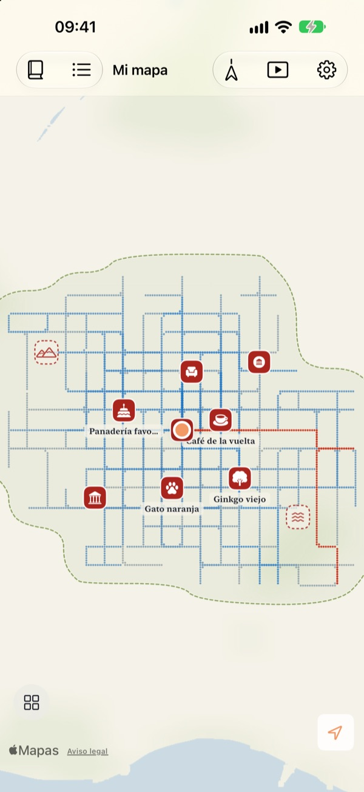
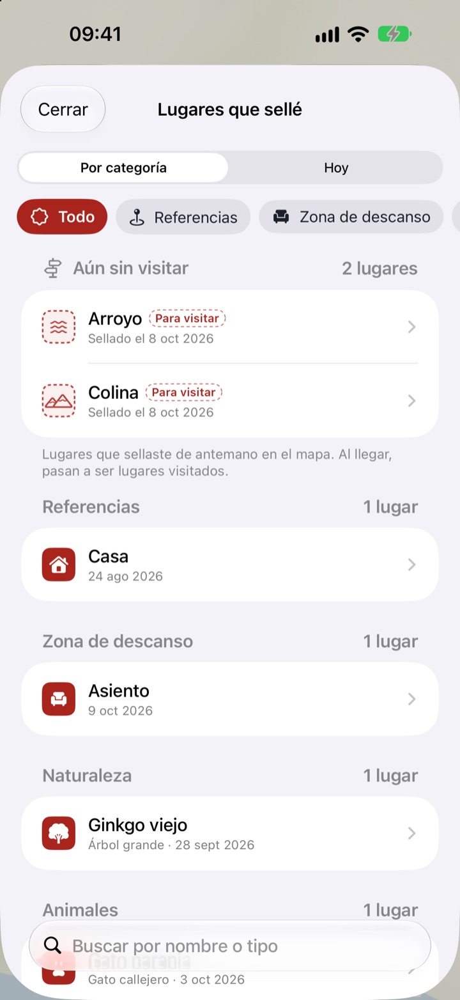
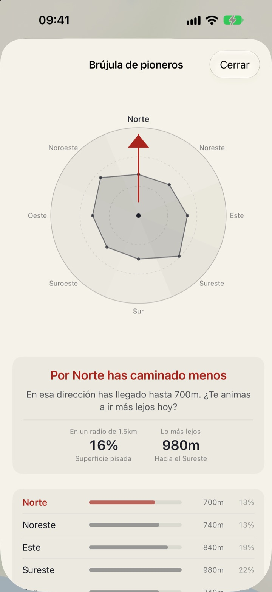
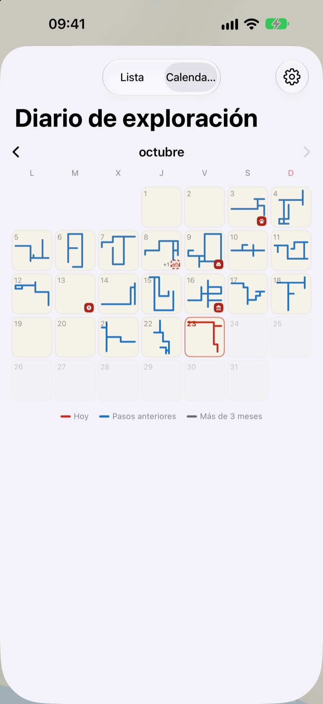

Un mapa que solo
se rellena a pie
Empieza siendo una hoja en blanco. Solo se rellenan, punto a punto, los sitios por donde caminas, y aunque pases cien veces por la misma calle no se ensancha. Para que el mapa crezca, toma un camino nuevo.
Todas las funciones son gratis y sin anuncios.

Date un paseo
Arrastra un dedo o el ratón por el papel para caminar. Los puntos azules son calles por las que ya pasaste. Fíjate en cómo cambia «El camino de hoy» si vuelves a pisarlas o si vas hacia otro lado.
¿Siempre por las mismas calles?
Un podómetro cuenta pasos, pero nunca pregunta adónde te llevaron. De casa a la estación y vuelta, el anillo se llena sin problema, y la callejuela de al lado sigue siendo un misterio durante años. Buktu Buktu solo cuenta los caminos que recorres por primera vez, y eso te da un motivo para desviarte una manzana hoy.
Sella los sitios donde has estado y a los que quieres ir
Sella el lugar donde estás o mantén pulsado cualquier punto del mapa. Hay 212 sellos para elegir, ordenados por categorías.
Un sello puesto donde nunca has caminado queda como lugar por visitar y pasa a ser visitado cuando llegas de verdad. Haz una foto al letrero de una tienda y se recorta el fondo para que quede en pie como una pegatina en ese sitio.

Próximo paseo: hacia donde menos has ido
La Brújula de pioneros divide tu entorno en ocho direcciones y señala la que menos has recorrido.
Huellas de hoy ordena los lugares donde te detuviste hoy, con lo que caminaste entre uno y otro.

Cada día deja una forma
El calendario dibuja la forma del paseo de cada día en lugar de un número. Lleva un diario con texto y fotos, y mira cuánto de cada paseo fue terreno nuevo.
Elige un periodo y mira cómo se dibuja tu mapa en un vídeo que puedes exportar.

Empieza en tres pasos
- 1
Abre la app
Se despliega una hoja en blanco.
- 2
Permite la ubicación
Elige «Siempre» y activa «Movimiento y forma física» para registrar tus paseos sin abrir la app.
- 3
Sal a caminar
Cuanto menos conocida es la calle, más crece el mapa.
Cómo leer el mapa
- Puntos rojos
- por donde caminaste hoy
- Puntos índigo
- pasos anteriores, más oscuros donde más pasas
- Puntos grises
- sitios a los que no has vuelto en más de tres meses. Se apagan, pero nunca desaparecen
- Sello discontinuo
- un lugar «Para visitar». Pasa a visitado cuando llegas
- Los caminos que dibujé
- longitud total de los caminos recorridos por primera vez
- El camino de hoy
- cuánto del paseo de hoy fue nuevo
- Ver todo junto
- en Ajustes, abre la Brújula de pioneros, Huellas de hoy y la película de tu mapa
Elige entre el mapa de tinta y el Mapa ilustrado.
Todas las funciones son gratis
Gratis
- Un mapa que solo se rellena a pie, con registro de caminos nuevos
- 212 sellos y pegatinas de letreros
- Brújula de pioneros y Huellas de hoy
- Calendario y diario con texto y fotos
- Exporta el vídeo de tu mapa dibujándose
- Widgets para la pantalla de inicio y la pantalla bloqueada
- Sincronización con iCloud entre dispositivos
Apoya al desarrollador
- Si te apetece, deja una pequeña propina desde Ajustes
- La propina no desbloquea nada. La app es exactamente la misma
Sin anuncios ni suscripciones.
Preguntas
He caminado, pero no aparece nada en el mapa.
Ve a Ajustes > Buktu Buktu > Ubicación, elige «Siempre» y activa «Movimiento y forma física». Así se registra aunque la app esté cerrada. Si en los ajustes de la app elegiste el modo de registro que ahorra batería, abre la app antes de salir. Las ubicaciones poco precisas se guardan, pero no se dibujan.
¿Se registran los trayectos en coche o metro?
No. Usa los datos de movimiento y la velocidad para dibujar solo cuando caminas o corres, y deja fuera los tramos que parecen hechos en vehículo. Alguna vez puede equivocarse.
Hago la misma ruta cada día y el mapa no crece.
Es la regla. Todo lo que quede a menos de 30 m de donde ya caminaste cuenta como el mismo camino, así que solo los caminos nuevos suman a «Los caminos que dibujé». La acera de enfrente también cuenta como el mismo camino. La Brújula de pioneros te muestra por dónde menos has ido.
¿Se envía mi ubicación a algún sitio?
Al desarrollador, no. Tus pasos, sellos, diario y fotos se quedan en tu dispositivo y en tu iCloud privado, y el desarrollador no puede verlos. Las estadísticas de uso anónimas nunca incluyen coordenadas, texto del diario, nombres de lugares ni fotos. Para convertir coordenadas en nombres de lugares se usan los servicios de Apple Mapas. Consulta la Política de privacidad más abajo para más detalles.
¿Mis registros pasan a un dispositivo nuevo?
Sí. Inicia sesión con la misma cuenta de Apple en el dispositivo nuevo y mantén iCloud activado: tus pasos, sellos, diario y fotos irán contigo.
¿Cómo borro un sello o una foto?
Borra los sellos desde la lista «Lugares que sellé», y mantén pulsada una foto del diario para eliminarla. Está previsto añadir una forma de borrar de una vez todos tus caminos y entradas del diario.
¿Cómo añado el widget?
Mantén pulsada la pantalla de inicio, toca Editar > Añadir widget y elige Buktu Buktu. Para la pantalla bloqueada, mantenla pulsada y toca Personalizar. El widget de la pantalla de inicio muestra la forma y la longitud del camino de hoy; el de la pantalla bloqueada, la distancia de hoy.
¿Qué necesito?
Un iPhone con iOS 17.0 o posterior.
¿Cómo me pongo en contacto?
Envía tus comentarios desde los ajustes de la app o escríbenos a la dirección de abajo. Te responderemos lo antes posible.
¿Dudas o sugerencias? Escribe a leeo@kakao.com.